Картофель с курицей и помидорами, запечённые в пергаменте

Ингредиенты:
Картошка - 270 г.
Куриное филе - 350 г.
Помидор
Лук
Чеснок
Сыр
Соль
Видео рецепт:
Пошаговый рецепт:
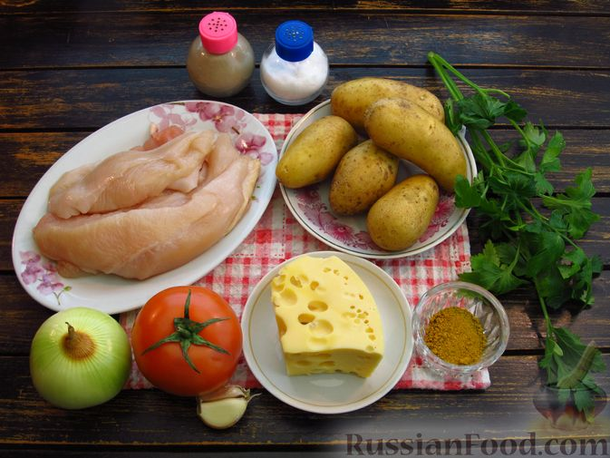
Шаг 1. Подготавливаем все необходимые продукты.
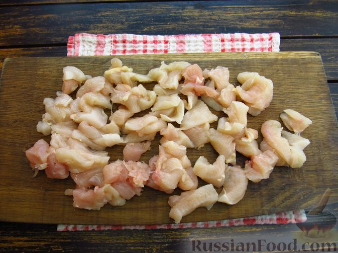
Шаг 2. Куриное филе нарезаем небольшими кубиками.
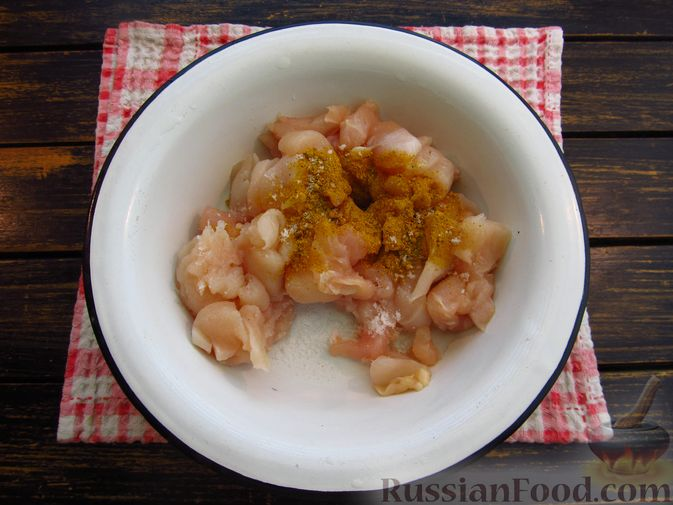
Шаг 3. Перекладываем филе в миску.
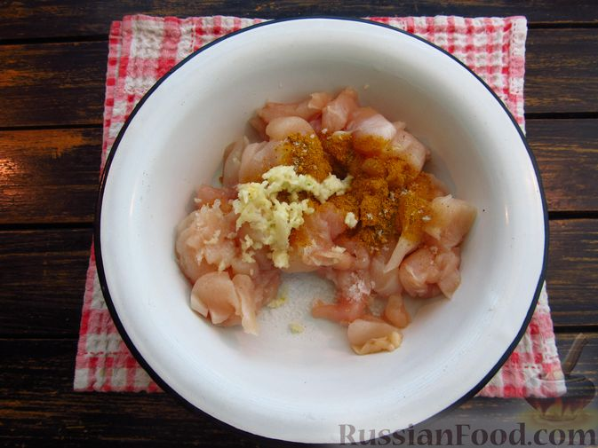
Шаг 4. Чеснок очищаем и пропускаем через пресс. Добавляем в миску с филе соль, черный молотый перец, карри и чеснок.
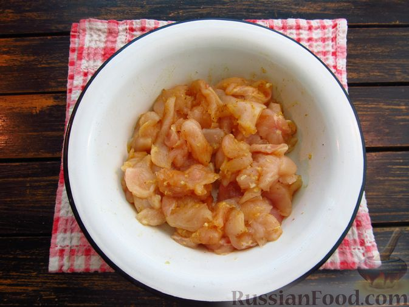
Шаг 5. Все перемешиваем и отставляем в сторону.
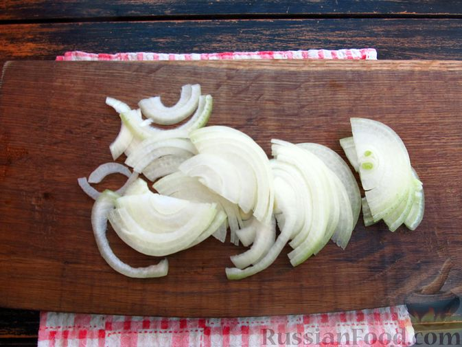
Шаг 6. Лук очищаем и нарезаем полукольцами.
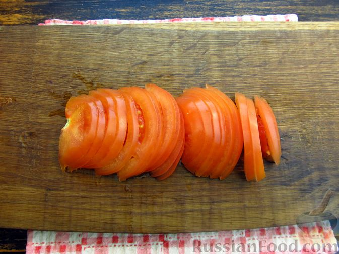
Шаг 7. Помидоры нарезаем полукружьями.
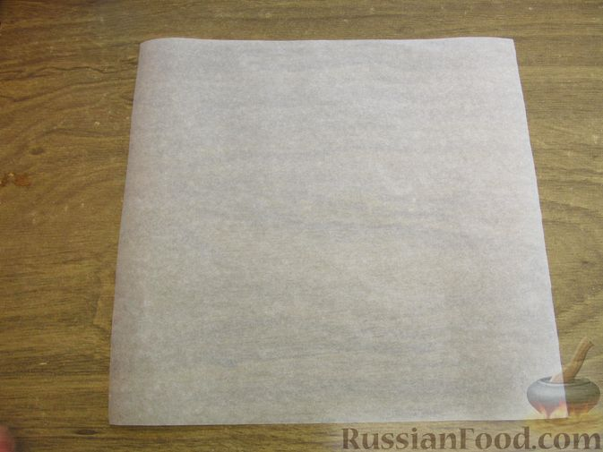
Шаг 8. Включаем духовку для предварительного разогрева до 180 градусов. Отрезаем лист пергамента 30х30 см.
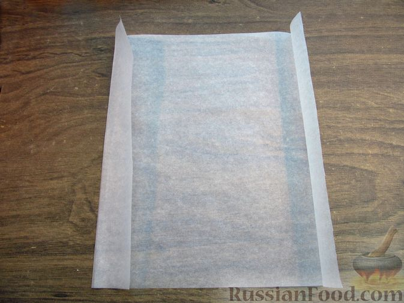
Шаг 9. От краёв листа отмеряем примерно по 3,5 см и делаем загибы, как на фото.
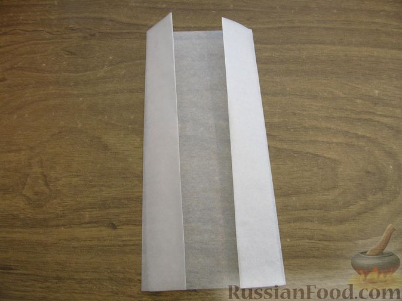
Шаг 10. Повторяем загибы ещё 2 раза.
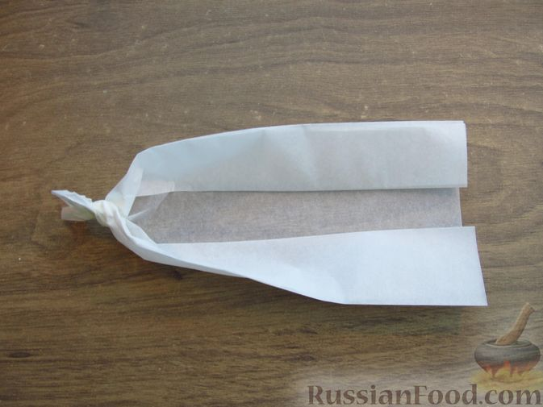
Шаг 11. Затем скручиваем концы, как на фото.
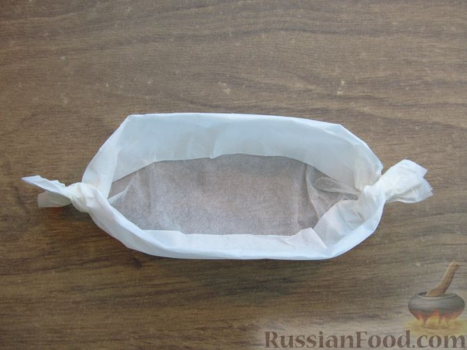
Шаг 12. Должна получиться вот такая лодочка.
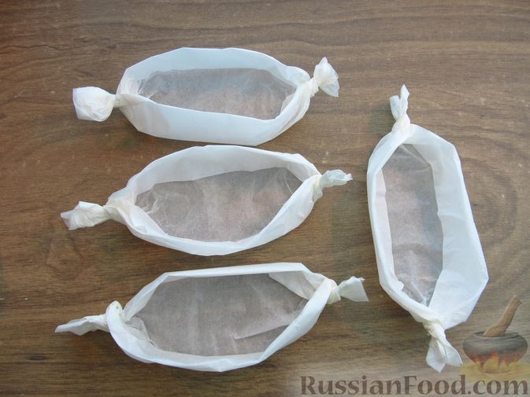
Шаг 13. Так формируем 4 лодочки.
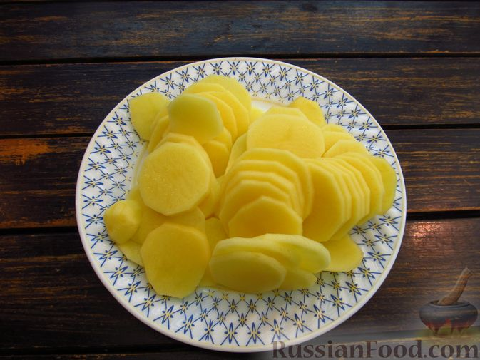
Шаг 14. Картофель очищаем и нарезаем тонкими кружочками.
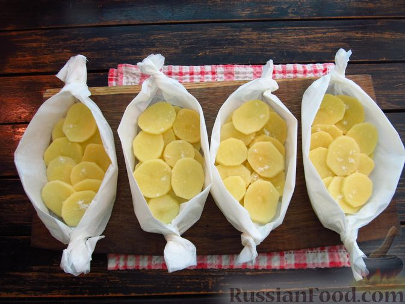
Шаг 15. На дно лодочек выкладываем слой картофеля. Картофель немного солим.
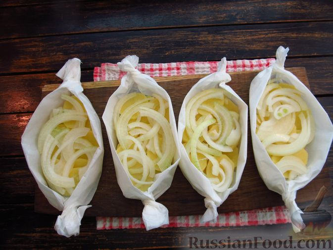
Шаг 16. Затем вторым слоем распределяем лук.
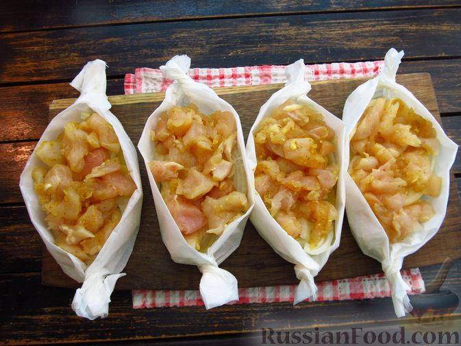
Шаг 17. Сверху - куриное филе.
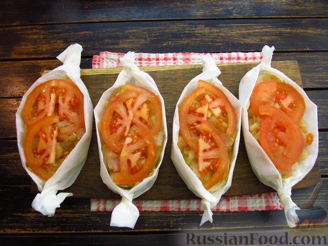
Шаг 18. Последним слоем выкладываем помидоры. Помидоры можно также немного присолить.
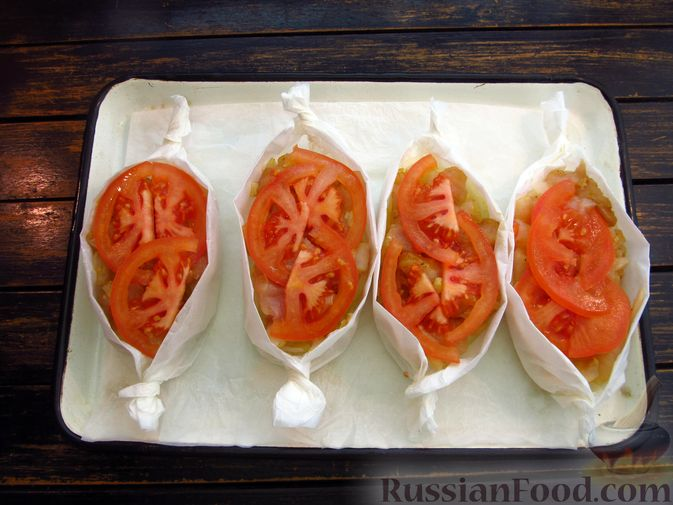
Шаг 19. Все лодочки выставляем на противень.
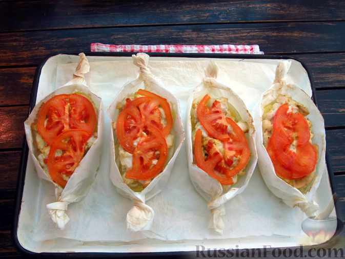
Шаг 20. Отправляем лодочки в заранее разогретую до 180 градусов духовку на 20-25 минут.
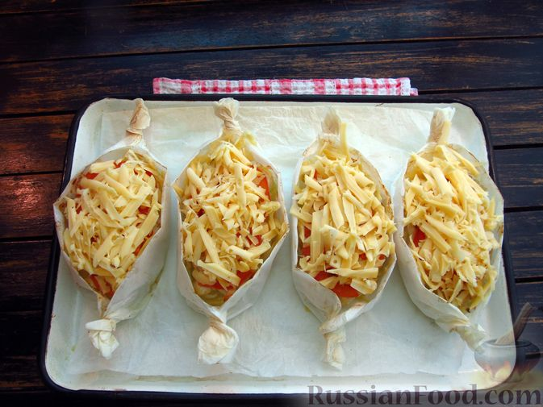
Шаг 21. Твёрдый сыр натираем на крупной тёрке. Вынимаем лодочки из духовки, посыпаем куриное филе с овощами натёртым сыром.
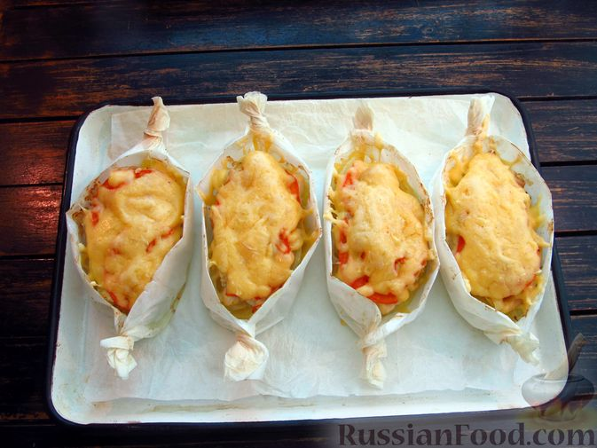
Шаг 22. Снова ставим лодочки в духовку на 15-20 минут. Запекаем до румяной корочки.
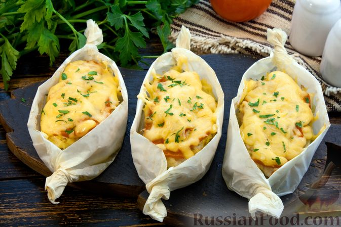
Шаг 23. Картофель с курицей и помидорами, запечённые в пергаменте, готовы к подаче.